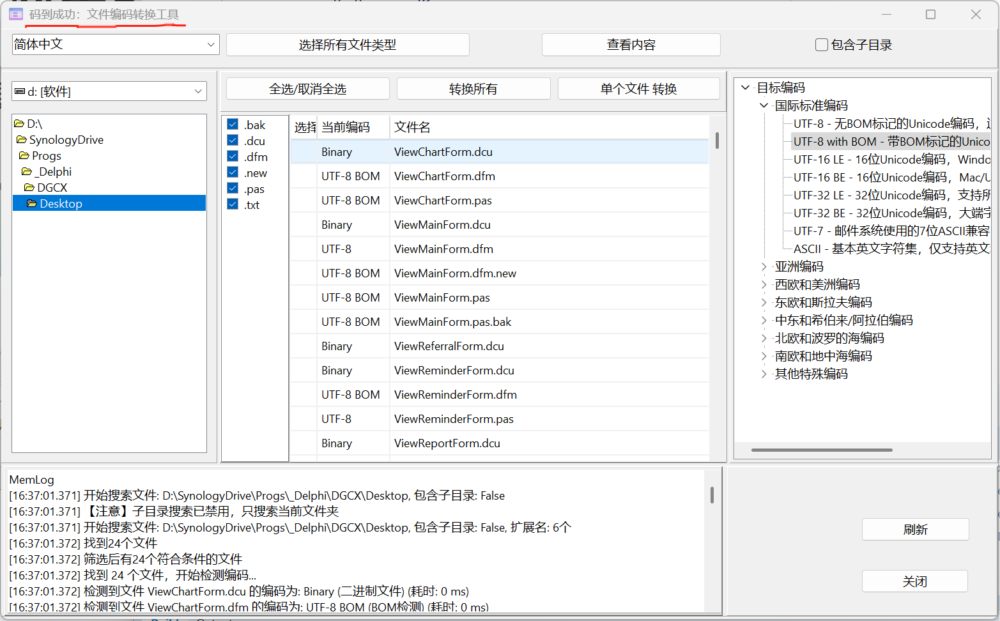
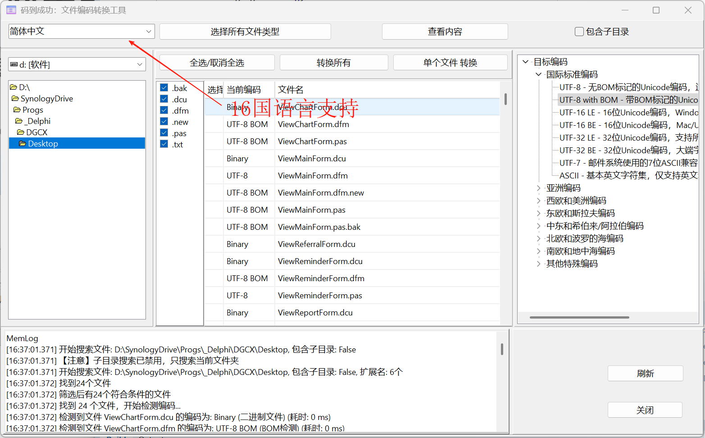
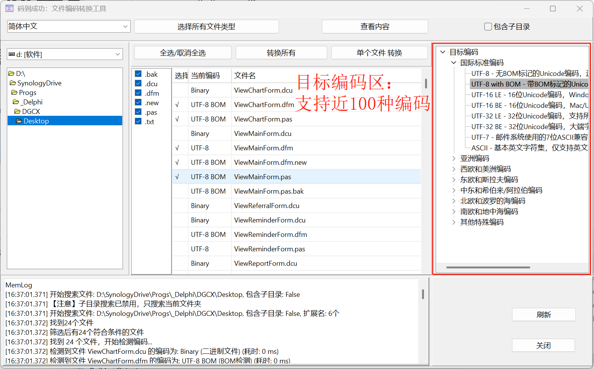
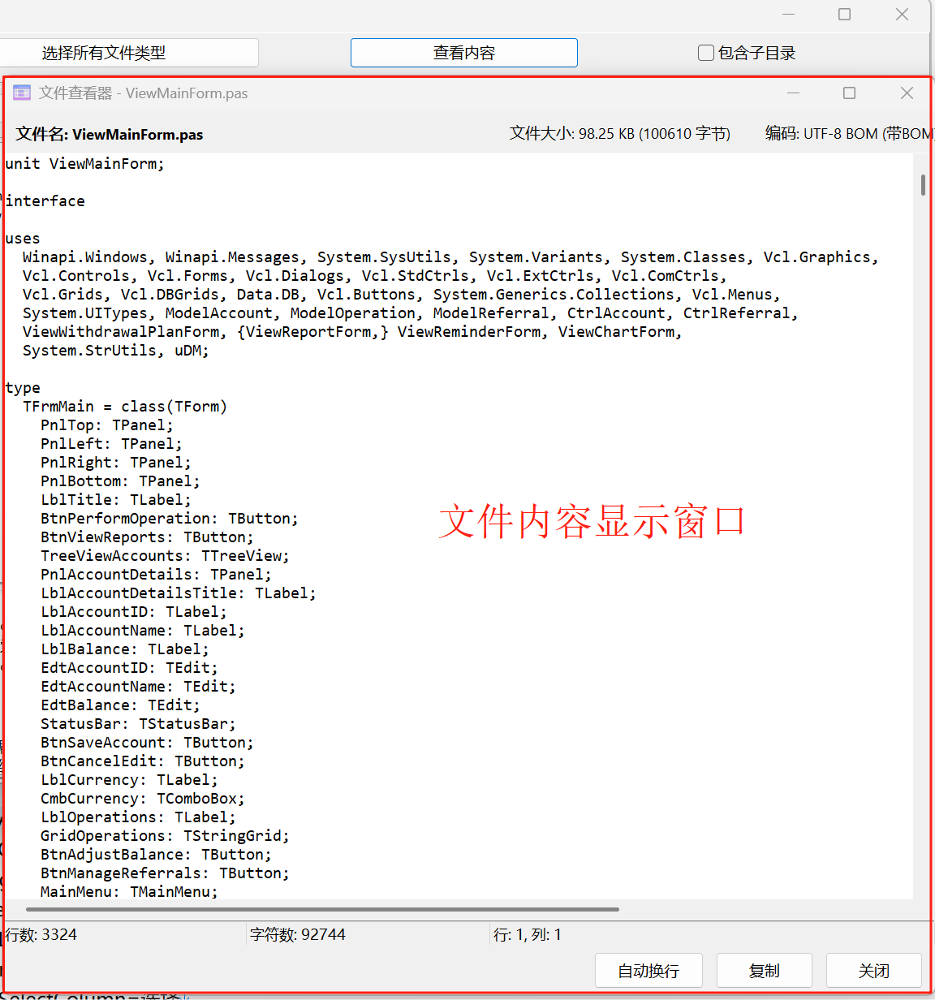

码到成功 DeepCharset
码到成功 - 让编码转换变得简单高效
DeepCharset 是一款专业的文件编码转换工具，采用全新改进的多层级编码检测和高级转换引擎，实现99%以上的检测准确率和100%的转换成功率。支持UTF-8、UTF-16、UTF-32、GBK、GB18030、BIG5、GB2312、Shift-JIS等多种编码格式之间的无损转换，彻底解决了UTF-8与UTF-8+BOM互相转换的问题。
了解更多支持批量选择文件进行转换，提高工作效率。可以按文件类型筛选，轻松处理大量文件。
采用多层级编码检测算法，通过字节模式分析和统计特征识别，准确率达99%以上。彻底解决UTF-8被误判为ANSI的问题，支持混合内容智能检测和BOM完整性验证。
基于TEncodingConverter_Improved引擎，采用流式处理和缓冲区优化技术，实现100%转换成功率。支持精确BOM控制、多种错误处理策略和参数化配置，确保字节级精确转换。
实现TEncodingConversionErrorHandlingStrategy错误处理策略，支持抛出、替换、跳过和报告四种模式。提供字节级错误定位和详细错误信息，包含错误类型、位置和原因分析，确保数据完整性。
采用静态类设计模式和面向对象编程，通过CompareText字符串比较和MilliSecondsBetween精确计时，优化内存使用和性能表现。支持大文件处理，保持稳定的转换速度和内存占用。
支持16种语言的完整国际化，所有70+编码在所有语言中都有专业翻译。通过多层级验证系统，支持对400+种编码组合的全面验证，确保在各种语言环境下的稳定表现。
彻底解决了UTF-8与UTF-8+BOM互相转换的问题，通过字节级精确控制和编码名称模糊匹配，确保100%转换成功率。支持UTF-8、UTF-16LE/BE、UTF-32LE/BE的BOM添加与移除。
采用全新的多层级编码检测算法，解决了UTF-8文件被错误检测为ANSI的问题。通过字节模式分析、统计特征识别和上下文验证，检测准确率提升至99%以上。
采用TEncodingBOMDetector_Improved、TUTF8EncodingDetector_Improved等静态类设计，提高代码复用性和维护性，减少内存占用，优化性能表现。
通过TBytes和流式处理技术，支持处理大型文件而不会导致内存溢出。采用缓冲区优化和毫秒级计时，保持稳定的转换速度和内存占用。

简洁直观的主界面设计，所有功能一目了然

支持16种语言界面，满足全球用户需求

支持近100种编码格式的检测和转换

转换前后可预览文件内容，确保转换效果
UTF-8, UTF-8 BOM, UTF-16LE, UTF-16BE, UTF-32LE, UTF-32BE, UTF-7
GBK, GB2312, GB18030, BIG5, HZ-GB-2312
Shift-JIS, EUC-JP, ISO-2022-JP, EUC-KR, UHC
ISO-8859-1/2/5/15, Windows-1250/1251/1252, KOI8-R/U